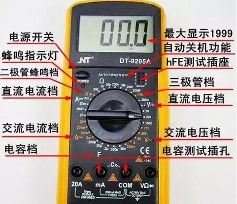
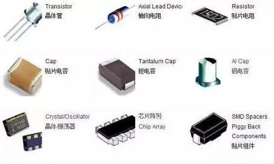

九大技巧检测常见电子元器件！！
电子设备中使用着大量各种类型的电子元器件，设备发生故障大多是由于电子元器件失效或损坏引起的。因此怎么正确检测电子元器件就显得尤其重要，这也是电子维修人员必须掌握的技能。在电器维修中积累了部分常见电子元器件检测经验和技巧。

测整流电桥各脚的极性
万用表置R×1k挡，黑表笔接桥堆的任意引脚，红表笔先后测其余三只脚，如果读数均为无穷大，则黑表笔所接为桥堆的输出正极，如果读数为4～10kΩ，则黑表笔所接引脚为桥堆的输出负极，其余的两引脚为桥堆的交流输入端。

判断晶振的好坏
先用万用表(R×10k挡)测晶振两端的电阻值，若为无穷大，说明晶振无短路或漏电;再将试电笔插入市电插孔内，用手指捏住晶振的任一引脚，将另一引脚碰触试电笔顶端的金属部分，若试电笔氖泡发红，说明晶振是好的;若氖泡不亮，则说明晶振损坏。

单向晶闸管检测
可用万用表的R×1k或R×100挡测量任意两极之问的正、反向电阻，如果找到一对极的电阻为低阻值(100Ω～lkΩ)，则此时黑表笔所接的为控制极，红表笔所接为阴极，另一个极为阳极。晶闸管共有3个PN结，我们可以通过测量PN结正、反向电阻的大小来判别它的好坏。测量控制极(G)与阴极[C)之间的电阻时，如果正、反向电阻均为零或无穷大，表明控制极短路或断路;测量控制极(G)与阳极(A)之间的电阻时，正、反向电阻读数均应很大;

双向晶闸管的极性识别

检查发光数码管的好坏

判别结型场效应管的电极
将万用表置于R×1k挡，用黑表笔接触假定为栅极G的管脚，然后用红表笔分别接触另外两个管脚，若阻值均比较小(5～10 Ω)，再将红、黑表笔交换测量一次。如阻值均大(∞)，说明都是反向电阻(PN结反向)，属N沟道管，且黑表笔接触的管脚为栅极G，并说明原先假定是正确的。若再次测量的阻值均很小，说明是正向电阻，属于P沟道场效应管，黑表笔所接的也是栅极G。若不出现上述情况，可以调换红、黑表笔，按上述方法进行测试，直至判断出栅极为止。一般结型场效应管的源极与漏极在制造时是对称的，所以，当栅极G确定以后，对于源极S、漏极D不一定要判别，因为这两个极可以互换使用。源极与漏极之间的电阻为几千欧。


三极管电极的判别
对于一只型号标示不清或无标志的三极管，要想分辨出它们的三个电极，也可用万用表测试。先将万用表量程开关拨在R×100或R×1k电阻挡上。红表笔任意接触三极管的一个电极，黑表笔依次接触另外两个电极，分别测量它们之间的电阻值，若测出均为几百欧低电阻时，则红表笔接触的电极为基极b，此管为PNP管。若测出均为几十至上百千欧的高电阻时，则红表笔接触的电极也为基极b，此管为NPN管。
在判别出管型和基极b的基础上，利用三极管正向电流放大系数比反向电流放大系数大的原理确定集电极。任意假定一个电极为c极，另一个电极为e极。将万用表量程开关拨在R×1k电阻挡上。对于：PNP管，令红表笔接c极，黑表笔接e极，再用手同时捏一下管子的b、c极，但不能使b、c两极直接相碰，测出某一阻值。然后两表笔对调进行第二次测量，将两次测的电阻相比较，对于：PNP型管，阻值小的一次，红表笔所接的电极为集电极。对于NPN型管阻值小的一次，黑表笔所接的电极为集电极。

电位器的好坏判别
先测电位器的标称阻值。用万用表的欧姆挡测“1”、“3”两端(设“2”端为活动触点)，其读数应为电位器的标称值，如万用表的指针不动、阻值不动或阻值相差很多，则表明该电位器已损坏。再检查电位器的活动臂与电阻片的接触是否良好。用万用表的欧姆挡测“1”、“2”或“2”、“3”两端，将电位器的转轴按逆时针方向旋至接近“关”的位置，此时电阻应越小越好，再徐徐顺时钟旋转轴柄，电阻应逐渐增大，旋至极端位置时，阻值应接近电位器的标称值。如在电位器的轴柄转动过程中万用表指针有跳动瑚象，描踢活动触』点接触不良。

测量大容量电容的漏电电阻